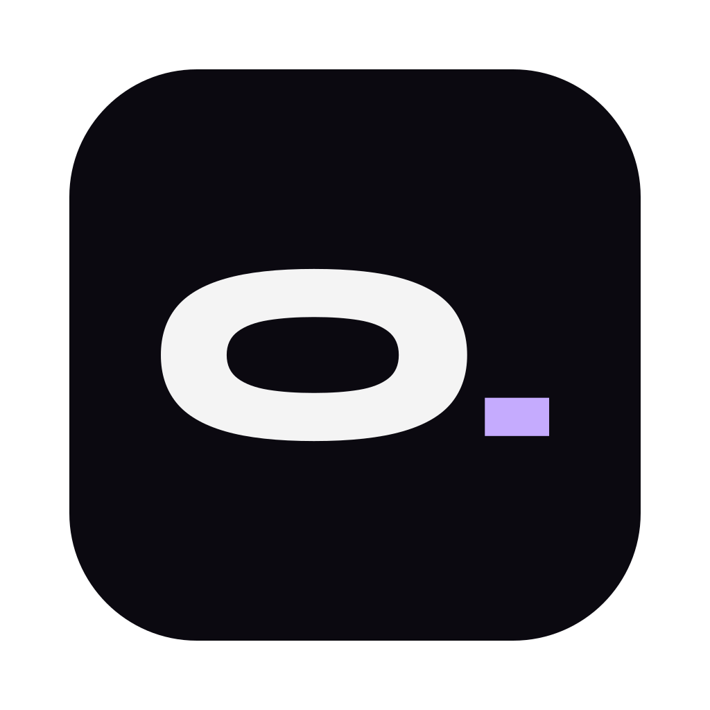

Essay · 6 min read
The slow web, revisited
Most pages carry more scripts than words. Take the trackers out and something odd happens: the page simply appears, the way pages used to.
Operecs · a browser for Mac
No account. No telemetry. No ads following you around. Just a browser built by hand, that gets out of the way and keeps what you do on your Mac.
Click the tabs. It's the real interface, drawn in HTML.
Features
Six things Operecs does differently. Each one is in the app you download today, not on a roadmap.
Across the top or down the side. Group them, name them, colour them, and put two side by side. Tabs you haven't touched in a while go to sleep, so forty open tabs still feel like four.
Sums, unit conversions and commands answer as you type, before you press Return. Type "clear history" and it clears history. The address shows the site, so you always know where you are.
A deep violet frame, so you never mistake one for a normal window. Each private window gets its own session in memory, and when you close it, everything it saw is gone.
Install straight from the Chrome Web Store. Password managers sign in and fill, buttons sit in the toolbar, and you can switch any extension off without removing it.
Bookmarks, history, open tabs and settings travel between your Macs, encrypted on your device with a key from your sync code. The code never leaves your devices, so the server only ever stores noise.
Turn it on, and Claude Code, Codex or other tools on your Mac can open pages and work in an Agent window. They connect locally with an access key. Your own tabs stay out of it unless you say so.
$ claude › check the checkout page on localhost ● Operecs · open http://localhost:3000/checkout ● Operecs · screenshot ✓ Button overlaps the total below 380px.
Privacy
Ads, trackers and third-party cookies are blocked from the first launch. Cookie banners are declined for you. And links lose their tracking tags the moment you open them.
utm_, fbclid, gclid and friends, removed automatically.
Besides the sites you visit, this is the whole list.
| Updates | GitHub Releases | every 6 h |
|---|---|---|
| Block lists | Ghostery's CDN | weekly |
| Search | Your engine, DuckDuckGo first | when you search |
| Site icons | The site itself | no cookies |
Translation, sync and crash reports only run if you turn them on. Read the privacy policy
Keyboard
More than sixty commands, every one rebindable in Settings, with conflicts caught as you type. Point at a shortcut to see it.
Built by hand
A weekly job checks for a newer Chromium patch and tests it, so security fixes land in days, not months.
Every update is checked against an Ed25519 signature before it installs. A pill in the toolbar says when it's ready.
Read every line on GitHub. If Operecs ever says it does something, you can check that it does.

Free for your Mac. Brings your bookmarks and history from Chrome, Brave, Edge, Arc or Vivaldi in one step.